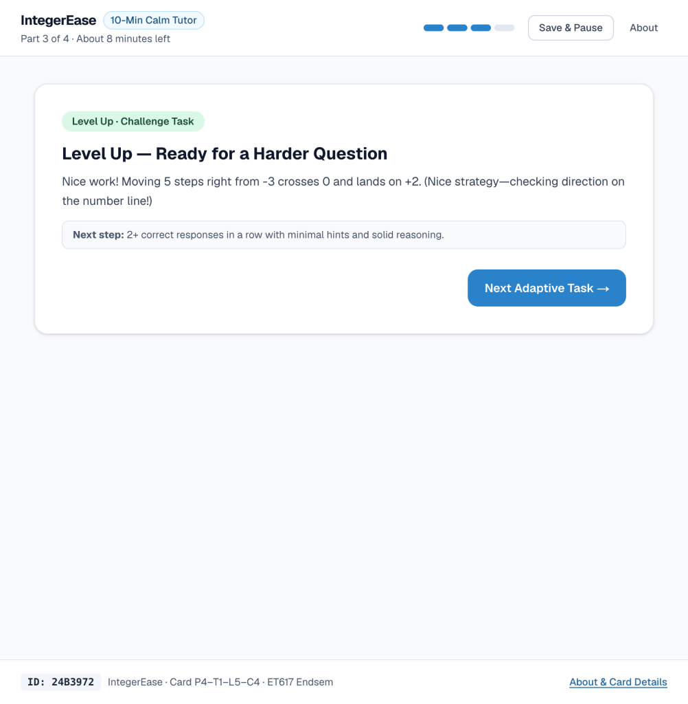
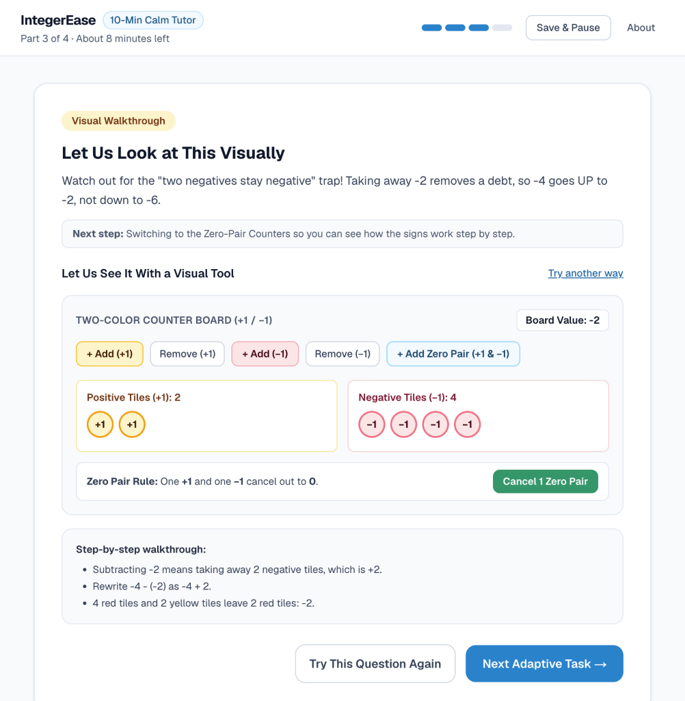
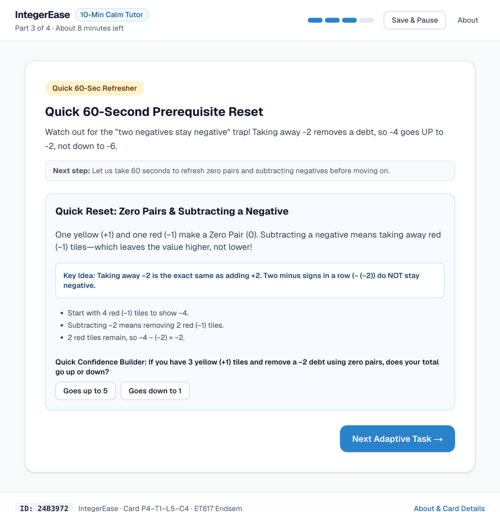

| Card Field | Specification |
|---|---|
| P4 — Problem | Adaptive tutor with automatic question generation (5 formats, explanation evaluation, 3-way decision rule) |
| T1 — Topic | Integers: operations with negative numbers (Class 7) |
| L5 — Learner | Learner repeating the topic after failing it once, high anxiety and low self-efficacy |
| C4 — Constraint | 10-minute sessions: complete sequence fits in 10 minutes; stop and resume where left off |
Class 7 learners who are repeating Integers: operations with negative numbers often rely on memorized, fragile sign rules (such as "two negatives make a negative") rather than understanding direction on a number line or zero-pair cancellation. When they apply these rules inconsistently, they make recurring sign errors—especially when subtracting negative numbers or comparing two negative values. Traditional practice platforms mark these errors with punitive red indicators and generic hints, which deepens math anxiety and lowers self-efficacy. An adaptive tutor that diagnoses why a learner got an integer operation wrong, switches to visual representations when needed, and structures practice into calm 10-minute sessions can rebuild both conceptual understanding and confidence.
-2 > -5.-4 - (-2)) using zero-pair or number-line reasoning.Context of Use: Evening study at home or after-school corner on a personal/shared smartphone or laptop, in calm 10-minute sessions with pause-and-resume.
| Dimension | Aarav Kulkarni (Class 7, Age 13) |
|---|---|
| Prior Knowledge | Fluent in whole-number arithmetic (0–100) and familiar with temperatures/elevators, but uncertain about negative ordering (-8 vs -3) and unfamiliar with zero pairs (+1 + -1 = 0). |
| Misconception M1 | Magnitude-Over-Sign / Direction Gap: Treats -8 > -3 because 8 > 3, moves the wrong direction on the number line, or gets the right magnitude with the wrong sign (2 + (-5) = +3). |
| Misconception M2 | Overgeneralized Sign Rule: Believes "two negatives always make a negative" (-4 - (-2) = -6) or assumes subtraction always makes the result smaller. |
| Device, Time & Language | Mid-range Android phone or laptop; 10–15 minutes in the evening (C4); short, warm, conversational everyday English (C3). |
| Motivation & Affect | High math anxiety and low self-efficacy ("I always mess up the minus signs"); responds well to non-punitive feedback, worked examples, peer debugging, and pre–post confidence tracking. |
Written in a conversational style (P5), the tutor pairs an Interactive Number Line (-10 to +10, keyboard & button accessible) and a Two-Color Counter Board (+1 yellow / −1 red with Zero-Pair cancellation) directly to M1 and M2.
| # | Format | Task Prompt | Model Answer | Targeted Feedback (Correct / M1 / M2) |
|---|---|---|---|---|
| 1 | Number-Line Jump | Start at -3. Move to show -3 + 5. | +2 | Correct: Strategy praise + 5 right crosses 0 to +2. M1: +5 moves RIGHT (warmer), not left. |
| 2 | Counter Board | Build 2 + (-5), pair zero pairs, see what is left. | -3 | Correct: 2 zero pairs cancel, 3 red (−1) remain.M1: Check leftover color (red = negative). |
| 3 | Step-by-Step | Solve -4 - (-2) (Step 1: rewrite; Step 2: value). | -4 + 2 → -2 | Correct: Taking away 2 red tiles leaves -2.M2: Removing -2 debt goes UP to -2, not -6. |
| 4 | Error-Spotting | Rohan wrote -6 - (-3) = -9. Spot the error! | Treated -(-3) as -3 instead of +3 (-3). | Correct: Sharp eye spotting the sign trap. M2: Subtracting -3 removes 3 red tiles. |
| 5 | Written Explanation | Why does 3 - (-2) give 5 instead of 1? | Removing -2 increases 3 by 2. | AI-Evaluated: Classifies into 5 classes + gives warm, specific feedback (with local fallback). |
URL: https://et617-24b3972.vercel.app | About: /about | Identity: ID: 24B3972 in every footer and on /about.
WELCOME): Calm overview + Resume Where You Left Off (localStorage persistence).DIAGNOSTIC, Part 1/4): Dynamically generated negative comparison & subtraction-of-negative items + unbiased confidence check.WARMUP, Part 2/4): Shows only the matched visual tool (Number Line or Counter Board) + Try another way.PRACTICE, Part 3/4): All 5 formats, zero repeats, ← Review Warm-up, See Similar Example, Gentle Hint, and Try Another Question.ADAPTIVE_FEEDBACK): Level Up, interactive Visual Walkthrough + Try This Question Again, Quick 60-Sec Refresher, or Quick Double-Check.SUMMARY, Part 4/4): Active study time, tasks completed, and Pre–Post Confidence Check./about): Identity card, repeatable Viva Demo Controls, and live local eventLog viewer.Scenario A — Confident / Correct-Response Path (HARDER_QUESTION): Starting from 1 correct task, the learner selects +2 on the -3 + 5 Number Line with 0 hints in <60s. The tutor triggers Level Up · Challenge Task and advances difficulty.

Scenario B — Misconception Path (M2_DOUBLE_NEGATIVE): On -4 - (-2), entering -4 + 2 and -6 once triggers Visual Walkthrough with the interactive Two-Color Counter Board; repeating -6 a second time escalates to Quick 60-Sec Refresher.


/api/tutor)| Feature | Model & Input | Pre-Display Validation | Fallback |
|---|---|---|---|
Written Explanation Evaluator (EVALUATE_EXPLANATION) |
OpenAI gpt-4o-mini (JSON mode, temp 0.3) receives prompt, concept, model idea, and learner's text; classifies into 5 classes + tone-appropriate feedback. |
Checks isCorrect boolean, valid 5-class enum, valid explanationQuality, and non-empty feedback (≤400 chars). |
evaluateWrittenExplanationLocally() (FALLBACK_LOCAL) using deterministic conceptual/misconception rules. |
Adaptive Question Generator (GENERATE_QUESTION) |
OpenAI gpt-4o-mini receives targetDifficulty, focusMisconception, preferredFormat, and avoidPrompts. |
validateStructuredQuestion() + integer range [-10, 10] + negative integer check (-\d+) + duplicate prompt rejection + no answer leaks. |
Non-duplicate curated item from QUESTION_BANK (FALLBACK_BANK). |
hintsUsed, worked examples viewed, responseTimeMs) to route to one of four evidence-based outcomes:
isCorrect + adequate explanation + hints ≤ 1 + time ≤ 60s + consecutiveCorrect ≥ 2.M1 or M2, or slow (>60s) unclear wrong response. Pairs M1 → Number Line; M2 → Counter Board.M1/M2 twice in a row, 2 consecutive scaffolded tasks (hint/example), or diagnostic gap.NON_CONCEPTUAL_SLIP (off by 1 or Step 1 slip) or fast UNCLASSIFIED—never triggers remedial lessons.How L5 & C4 Shaped Design: No internal enum jargon on learner screens, unbiased confidence checks, worked-example toggles, calm skips, strategy praise, pre–post confidence tracking (L5), and 4-part pacing with Save & Pause + localStorage resume (C4).
| D1 Outcome | Assessment / Rubric | Logged Signals (eventLog) | Success Criterion |
|---|---|---|---|
| 1. Compare & Represent | Diagnostic comparison + NUMBER_LINE + q-explain-2 | DIAGNOSTIC_COMPLETED, RESPONSE_SUBMITTED, responseTimeMs | ≥80% resolve M1 within 1–2 scaffolds. |
| 2. Compute & Predict | COUNTER_BOARD + STEP_BY_STEP (Step 1 & 2) | RESPONSE_SUBMITTED, HINT_REQUESTED, ADAPTIVE_OUTCOME | ≥75% reach Level 2+ in ≤10 active mins. |
| 3. Justify & Debug | ERROR_SPOTTING + WRITTEN_EXPLANATION | explanationQuality === 'ADEQUATE', pre–post confidence | ≥70% achieve ADEQUATE + neutral/positive confidence shift. |
AI Tools Used: Antigravity coding assistant (architecture, Next.js/TypeScript implementation, live browser verification, and report generation) and OpenAI gpt-4o-mini (live runtime evaluator & generator via /api/tutor). Complete chat logs are exported as .txt for Moodle.
Reflection: Live testing caught four critical issues that initial AI generation missed: (1) internal enum names leaking into learner UI, (2) read-only walkthrough tools blocking exploration, (3) AI-generated prompts leaking answers (5 + 3) or omitting negative integers (3 + 4), and (4) Step 1 rewrite inputs needing explicit grading. Fixing each turned the prototype into a reliable, learner-centered tutor.